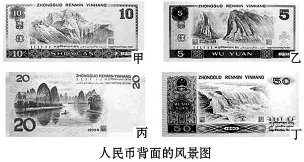
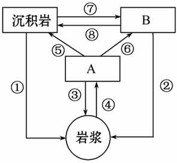
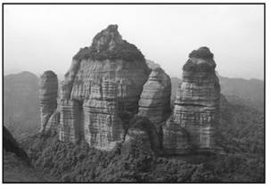
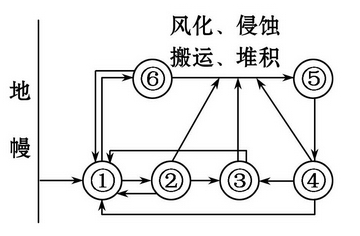
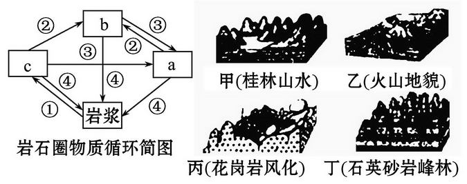

None - Fade - Slide - Convex - Concave - Zoom
选择班级
幻灯片样式
Black (default) -
White -
League -
Sky -
Beige -
Simple
Serif -
Blood -
Night -
Moon -
Solarized
1.下列现象主要由内力作用形成的是( )
A.喀斯特地貌
B.长江三角洲
C.东非大裂谷
D.科罗拉多大峡谷
2.上图中，与流水溶蚀作用密切相关的是( )
A.甲
B.乙
C.丙
D.丁
3.乙图中雄伟壮丽景观的成因是( )
A.太平洋板块与亚欧板块碰撞隆起而成
B.内外力共同作用形成
C.地壳运动和风力侵蚀综合作用而成
D.冰川侵蚀作用形成
青岛的崂山山脉形成于燕山造山运动时期，山海相连，雄伟壮观。崂山山脉主要以花岗岩为主，花岗岩地貌景观独具特色， 山体呈垂直节理发育，球状风化明显。结合地壳物质循环简略图，回答4、5题。
4.图中各数字和字母代表的地质作用及岩石，属于崂山花岗岩和变质作用的编号分别是( )
A.B和⑥⑧
B.A和⑤⑧
C.B和①②
D.A和⑥⑦
5.关于花岗岩球状风化的说法正确的是( )
A.能量来源于地球内部
B.属于图中④环节表示的地质作用
C.属于内力作用
D.属于外力作用
1.下列地质作用中属于内力作用表现形式的是( )
①2010年5月冰岛火山喷发 ②喜马拉雅山脉的隆起
③黄果树瀑布的形成 ④黄土高原的形成
A.①②
B.②③
C.①④
D.①②③④
2010年8月1日傍晚，在巴西利亚举行的第34届世界遗产大会审议通过了将中国湖南崀山、广东丹霞山等联合申报的“中国丹霞地貌”列入“世界自然遗产目录”。地质时期广东丹霞山
区是一个大型内陆盆地，沉积了巨厚的红色岩层。后来由于地壳运动和外力作用形成了一片红色山群(丹霞地貌)。结合右图完成2、3题。
2.该地区的红色岩层属于( )
A.砂岩
B.花岗岩
C.板岩
D.玄武岩
3.形成红色山群陡峭特征的主要外力作用是( )
A.地壳上升运动
B.流水侵蚀作用
C.流水沉积作用
D.风力侵蚀作用
4.(2011·大庆高一检测)下图是三大岩石关系示意图，图中数码①～⑥所代表的内容依次是( )
A.①喷出岩 ②岩浆 ③侵入岩 ④变质岩 ⑤岩浆岩 ⑥沉积岩
B.①岩浆 ②侵入岩 ③变质岩 ④沉积岩 ⑤沉积物 ⑥喷出岩
C.①喷出岩 ②沉积物 ③变质岩 ④沉积岩 ⑤岩浆岩 ⑥侵入岩
D.①喷出岩 ②侵入岩 ③变质岩 ④岩浆岩 ⑤沉积岩 ⑥岩浆
读岩石圈物质循环简图、地貌景观图，回答5、6题。
5.在甲、乙、丙、丁四幅图中，与流水溶蚀作用密切相关的是( )
A.甲图
B.乙图
C.丙图
D.丁图
6.在岩石圈物质循环简图中，能反映丙图岩石和地貌形成过程的是( )
A.③④
B.①③
C.①②
D.②④